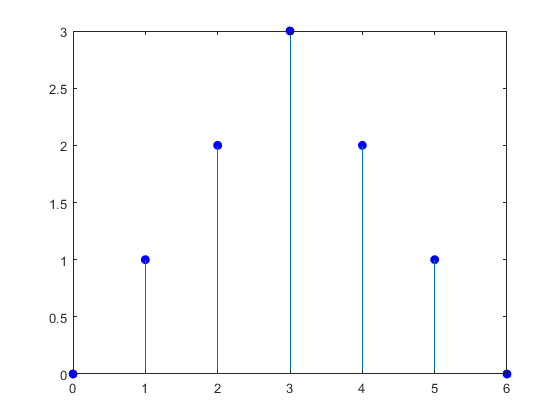
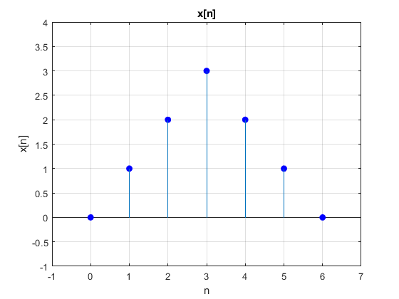
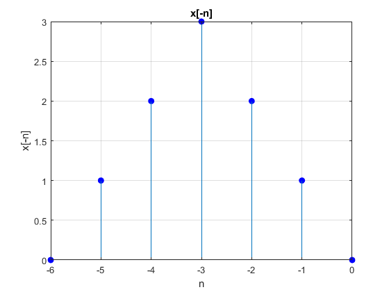
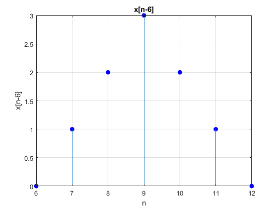
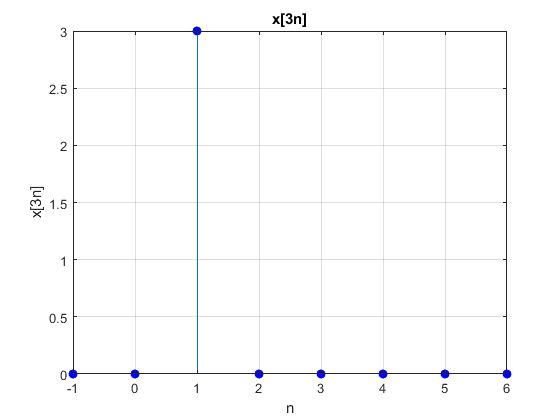
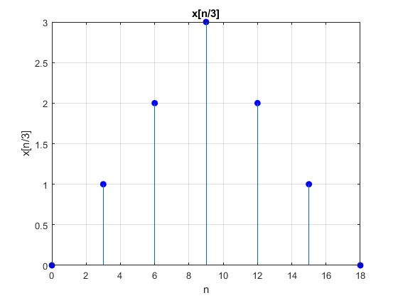
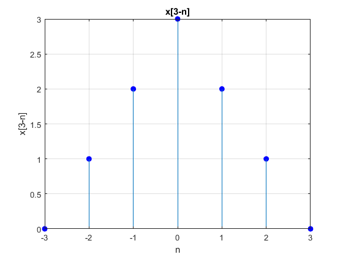

Ejercicio 3
Para las señales mostradas en la figura P3.1-1b,bosqueje las siguientes señales: Generando la función original Iniciamos recreando la señal, mostrada en la grafica que muestra "Lathi" Hacemos anonima la funcion y la guardamos en la varibale "y". Continuamente proponemos un intervalo adecuado y se pueda representar en la grafica correctamente. Definir los puntos de la señal discreta
x = [0 1 2 3 4 5 6]; y = [0 1 2 3 2 1 0];
stem(x, y, 'filled', 'MarkerFaceColor', 'b', 'MarkerEdgeColor', 'b');
Establecer el rango de los ejes
xlim([-1 7]); ylim([-1 4]); grid on; title('x[n]'); xlabel('n'); ylabel('x[n]');
Aplicar transformaciones (a) x[-n]: La señal se refleja en el eje horizontal
figure; x_b = x - 6; y_b = y; stem(x_b, y_b, 'filled', 'MarkerFaceColor', 'bl', 'MarkerEdgeColor', 'b'); grid on; title('x[-n]'); xlabel('n'); ylabel('x[-n]');
(b) x[n+6]: Se adelanta 6 unidades
figure; x_b = x - 6; y_b = y; stem(x_b, y_b, 'filled', 'MarkerFaceColor', 'b', 'MarkerEdgeColor', 'b'); grid on; title('x[n+6]'); xlabel('n'); ylabel('x[n+6]');
(c) x[n-6]: La señal se atraza 6 unidades
figure; x_c = x + 6; y_c = y; stem(x_c, y_c, 'filled', 'MarkerFaceColor', 'b', 'MarkerEdgeColor', 'b'); grid on; title('x[n-6]'); xlabel('n'); ylabel('x[n-6]');
(d) x[3n]: Compresión en el eje n por un factor de 3
figure; x_d = -1:6; y_d = [0 0 3 0 0 0 0 0]; stem(x_d, y_d, 'filled', 'MarkerFaceColor', 'b', 'MarkerEdgeColor', 'b'); grid on; title('x[3n]'); xlabel('n'); ylabel('x[3n]');
(e) x[n/3]: Expansión en el eje n por un factor de 3
figure; x_e = x * 3; y_e = y; stem(x_e, y_e, 'filled', 'MarkerFaceColor', 'bl', 'MarkerEdgeColor', 'bl'); grid on; title('x[n/3]'); xlabel('n'); ylabel('x[n/3]');
(f) x[3-n]: Reflejo respecto al eje horizontal y desplazamiento hacia la derecha en 3 unidades
figure; x_f = 3 - x; y_f = y; stem(x_f, y_f, 'filled', 'MarkerFaceColor', 'b', 'MarkerEdgeColor', 'b'); grid on; title('x[3-n]'); xlabel('n'); ylabel('x[3-n]');